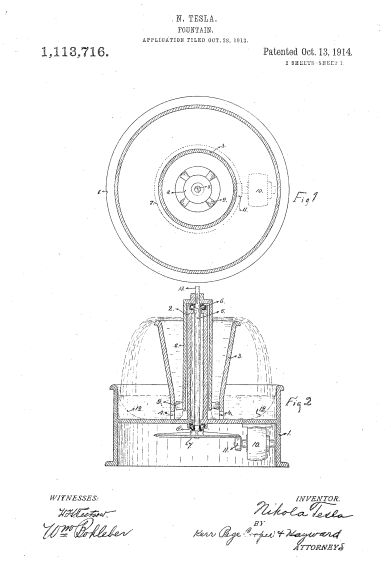
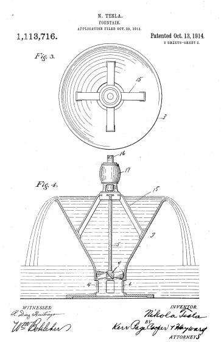

Descarga la patente original en esté enlace



Que se sepa que yo, N IKOLA T ESLA , ciudadano de los Estados Unidos, residente en Nueva York, distrito de Manhattan, condado y estado de Nueva York, he inventado ciertas mejoras nuevas y útiles en Fountains, de las cuales la siguiente es una descripción completa, clara y exacta.
Hasta ahora ha sido costumbre en fuentes y exhibiciones de acuario, proyectar picos, chorros o rociadores de agua desde accesorios adecuados, principalmente con fines decorativos y de embellecimiento. Invariablemente, la cantidad de fluido que emanaba era pequeña y la agradable impresión a la vista era únicamente el resultado de la disposición más o menos artística de los riachuelos y ornamentos empleados. La presente invención se aparta de dicha práctica en el sentido de que se basa principalmente en el fascinante espectáculo de una gran masa de fluido en movimiento y la exhibición de un poder aparentemente grande. Incidentalmente, permite la realización de vistas hermosas e impactantes a través de la iluminación y la disposición de cascadas voluminosas que, además, pueden aplicarse a propósitos útiles en formas no practicables con los dispositivos antiguos y familiares.
La idea subyacente de la invención puede llevarse a cabo mediante aparatos de diseño muy variado, pero en el presente caso, las formas más simples, de las que tengo conocimiento, se muestran como realizaciones del principio implicado.
En el dibujo adjunto, la figura 1 es un plano superior y la figura 2 una vista en sección central vertical de un aparato que he diseñado para este propósito. La figura 3 y la figura 4 ilustran vistas correspondientes de un dispositivo similar de construcción mucho más simple.
Con referencia al primero, 1 representa un receptáculo de cualquier material adecuado, como metal, vidrio, porcelana, mármol, cemento u otro compuesto, con un eje central 2 y un conducto cónico 3, ensanchado en la parte superior y provisto de aberturas 4 en El fondo. En el cubo 2 se inserta un eje 5 apoyado de forma giratoria sobre rodamientos de bolas 6 y que lleva en su extremo inferior una polea de fricción o rueda dentada 7. En el extremo superior del eje se fija una pieza fundida 8, preferiblemente de alguna aleación no corrosiva, con las palas 9 que constituyen un tornillo que se muestra en este caso como el dispositivo propulsor más conocido; pero se entenderá que pueden emplearse otros medios. Un motor 10 está adecuadamente montado para transmitir a través de la rueda 11, por fricción o de otro modo, potencia a la polea o rueda 7. Las aberturas 4 pueden cubrirse con filtros extraíbles y los receptáculos 1 pueden estar provistos de conexiones convenientes, respectivamente, para limpiar y renovar el líquido. Se considera innecesario mostrar estos archivos adjuntos en el dibujo.
La operación se entenderá fácilmente. El receptáculo 1 se llena al nivel adecuado con agua u otro fluido, y se enciende la energía, las palas de la hélice 9 se ponen en rotación y el fluido, extraído a través de las aberturas 4, se eleva a la parte superior abocinada horizontal del conducto 3 hasta que se desborda en forma de cascada circular.
Para evitar el mojado de los cojinetes del eje 5, el cubo central 2 del receptáculo 1 se hace sobresalir por encima del conducto 3. Este último tiene forma de embudo por razones de economía, y también con el propósito de reducir la velocidad y asegurar un desbordamiento suave y uniforme. Como la sustentación es insignificante, se necesita poca potencia para mantener en movimiento un gran volumen de agua y la impresión que se produce en el observador es muy llamativa. Con el fin de economizar aún más energía, el fondo del receptáculo 1 puede tener la forma indicada por las líneas de puntos 12, en la figura 2, para aumentar la velocidad en la entrada de la hélice.
Para dar una idea de los resultados que se pueden obtener con un pequeño aparato, debidamente diseñado, se puede afirmar que aplicando solo 1/25 de un caballo de fuerza al eje y suponiendo una elevación de dieciocho pulgadas, más de cien galones por minuto puede ser propulsado, la profundidad del fluido que pasa sobre la parte superior ensanchada del conducto 3, de un pie de diámetro, es de casi media pulgada. Como la circulación es extremadamente rápida, la cantidad total de líquido necesaria es comparativamente pequeña. Aproximadamente una décima parte de lo entregado por minuto será, en general, suficiente. Tal cascada presenta una apariencia singularmente atractiva y esta característica puede mejorarse aún más mediante la agrupación artística de plantas u otros objetos a su alrededor, en cuyo caso todo el dispositivo puede quedar oculto a la vista. Exhibiciones particularmente hermosas, sin embargo, son obtenibles mediante iluminación que puede realizarse de muchas formas. Para realzar el efecto, se puede emplear un fluido coloreado, opalescente o fosforescente. También se pueden utilizar líquidos esterilizantes, aromáticos o radioactivos, cuando así se desee. Las fuentes habituales son objetables en muchos lugares debido a la facilidad que ofrecen para la cría de insectos. El aparato descrito no solo lo hace imposible, sino que es una trampa muy eficaz. A diferencia de los dispositivos antiguos en los que solo se pone en movimiento un volumen muy pequeño de agua, una cascada de este tipo es muy eficaz para enfriar la atmósfera circundante. Para mejorar todavía esta acción, el extremo libre 13 del eje giratorio se puede utilizar para transportar cualquier tipo de ventilador. Por supuesto, el agua puede enfriarse artificialmente. Puede emplearse fluido opalescente o fosforescente. También se pueden utilizar líquidos esterilizantes, aromáticos o radioactivos, cuando así se desee. Las fuentes habituales son objetables en muchos lugares debido a la facilidad que ofrecen para la cría de insectos. El aparato descrito no solo lo hace imposible, sino que es una trampa muy eficaz. A diferencia de los dispositivos antiguos en los que solo se pone en movimiento un volumen muy pequeño de agua, una cascada de este tipo es muy eficaz para enfriar la atmósfera circundante. Para mejorar todavía esta acción, el extremo libre 13 del eje giratorio se puede utilizar para transportar cualquier tipo de ventilador. Por supuesto, el agua puede enfriarse artificialmente. Puede emplearse fluido opalescente o fosforescente. También se pueden utilizar líquidos esterilizantes, aromáticos o radioactivos, cuando así se desee. Las fuentes habituales son objetables en muchos lugares debido a la facilidad que ofrecen para la cría de insectos. El aparato descrito no solo lo hace imposible, sino que es una trampa muy eficaz. A diferencia de los dispositivos antiguos en los que solo se pone en movimiento un volumen muy pequeño de agua, una cascada de este tipo es muy eficaz para enfriar la atmósfera circundante. Para mejorar todavía esta acción, el extremo libre 13 del eje giratorio se puede utilizar para transportar cualquier tipo de ventilador. Por supuesto, el agua puede enfriarse artificialmente. Las fuentes habituales son objetables en muchos lugares debido a la facilidad que ofrecen para la cría de insectos. El aparato descrito no solo lo hace imposible, sino que es una trampa muy eficaz. A diferencia de los dispositivos antiguos en los que solo se pone en movimiento un volumen muy pequeño de agua, una cascada de este tipo es muy eficaz para enfriar la atmósfera circundante. Para mejorar todavía esta acción, el extremo libre 13 del eje giratorio se puede utilizar para transportar cualquier tipo de ventilador. Por supuesto, el agua puede enfriarse artificialmente. Las fuentes habituales son objetables en muchos lugares debido a la facilidad que ofrecen para la cría de insectos. El aparato descrito no solo lo hace imposible, sino que es una trampa muy eficaz. A diferencia de los dispositivos antiguos en los que solo se pone en movimiento un volumen muy pequeño de agua, una cascada de este tipo es muy eficaz para enfriar la atmósfera circundante. Para mejorar todavía esta acción, el extremo libre 13 del eje giratorio se puede utilizar para transportar cualquier tipo de ventilador. Por supuesto, el agua puede enfriarse artificialmente. Para mejorar todavía esta acción, el extremo libre 13 del eje giratorio se puede utilizar para transportar cualquier tipo de ventilador. Por supuesto, el agua puede enfriarse artificialmente. Para mejorar todavía esta acción, el extremo libre 13 del eje giratorio se puede utilizar para transportar cualquier tipo de ventilador. Por supuesto, el agua puede enfriarse artificialmente.
El dispositivo descrito puede modificarse de muchas formas y también simplificarse considerablemente. Por ejemplo, la hélice puede fijarse directamente al eje del motor y este último soportado convenientemente desde arriba cuando muchas de las partes ilustradas en la figura 1 y la figura 2 pueden prescindirse de ellas. De hecho, el receptáculo 1 en sí mismo puede ser reemplazado por un tanque o palangana independiente de modo que todo el aparato solo consista en un conducto en forma de embudo, motor y hélice como una unidad. Una construcción de este tipo se muestra en la figura 3 y la figura 4, en la que 3 es un recipiente cónico provisto de aberturas de admisión 4 y que descansa sobre una base sustancial. Un motor 14, que lleva sobre un eje fuerte 5 una hélice 9, está fijado a soportes 15 que se extienden desde el lado interior del conducto 3 y pueden ser solidarios con el mismo. Obviamente.
El aparato de esta descripción está especialmente diseñado para su uso en cuencas o depósitos abiertos en los que puede colocarse y ponerse en funcionamiento con poca antelación. Cuando se desee producir cascadas grandes y permanentes, el conducto 3 puede estar formado por mampostería de diseño arquitectónico apropiado.
La invención tiene un campo de aplicación ilimitado en viviendas particulares, hoteles, teatros, salas de conciertos, hospitales, acuarios y, en particular, en plazas, jardines y parques en los que podrá realizarse a mayor escala para ofrecer un espectáculo magnífico. mucho más cautivadoras y estimulantes para el público que las insignificantes pantallas que se utilizan actualmente.
Soy consciente de que hasta ahora se han exhibido cascadas artificiales y que las fuentes por las que circula la misma agua son antiguas y conocidas. Pero en todos estos casos se utilizaron bombas independientes de pequeña capacidad volumétrica para elevar el agua a una altura apreciable que implicó el gasto de una energía considerable, mientras que el espectáculo ofrecido a la vista carecía de interés. En ningún caso, que yo sepa, una gran masa de fluido ha sido impulsada únicamente por el uso de la energía necesaria para elevarla desde su nivel normal a través de un espacio relativamente corto hasta aquél desde donde se desborda y desciende como una cascada. tampoco se han empleado dispositivos especialmente adaptados para ese fin.
Lo que reclamo es:
Fechado el día 13 de octubre de 1914. .
Nikola Tesla.